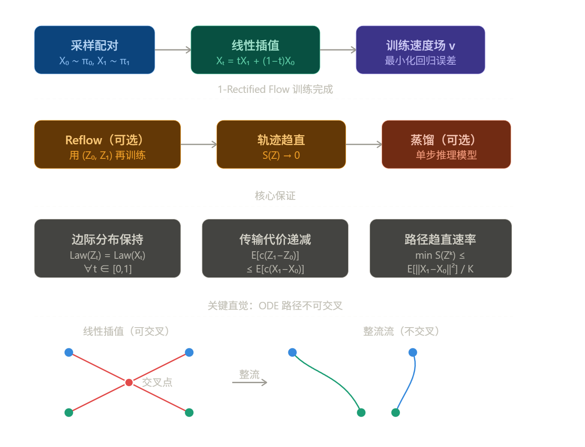
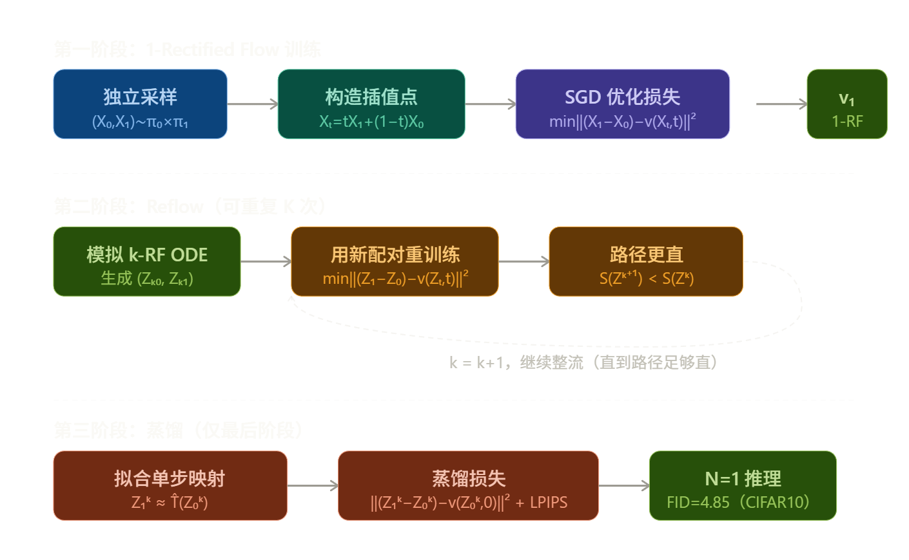
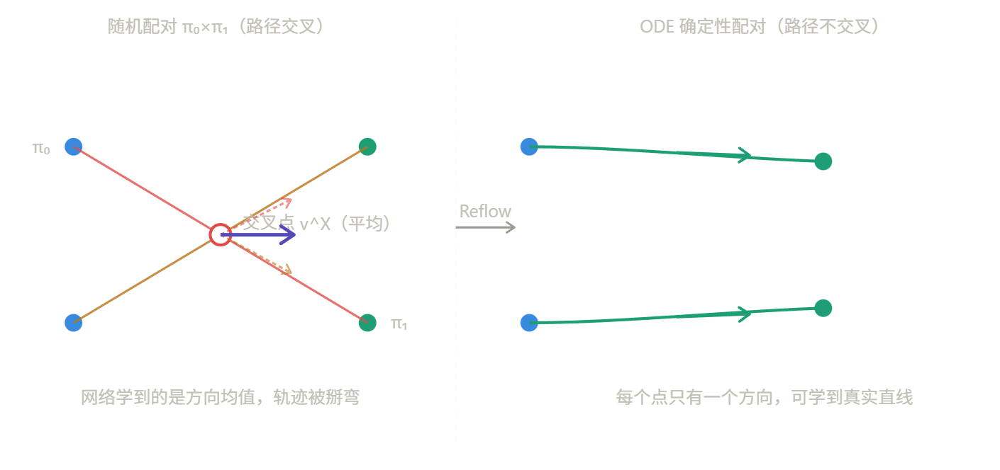
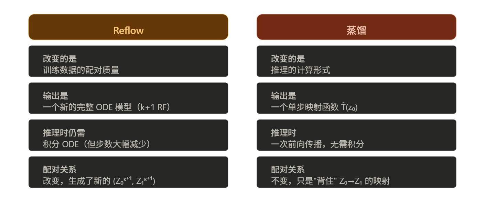

Rectified Flow 修正流
文档信息
创建时间：2026-3-24 | 更新时间：2026-3-24
本文基于Flow Straight and Fast: Learning to Generate and Transfer Data with Rectified Flow 做笔记
核心思想
Rectified Flow 要解决的是分布传输问题：给定两个分布 π₀ 和 π₁ 的样本，找到一个从 π₀ 到 π₁ 的映射。它的关键洞察是：让 ODE 的轨迹尽量沿直线行进。
直线路径之所以特殊，有两个原因：
- 理论上是两点之间最短路径，传输代价最低
- 计算上可以被单步精确模拟，极大降低推理开销
传统扩散模型（DDPM、Score-based models）走弯曲轨迹，需要数百甚至数千步推理步骤。Rectified Flow 把这个问题从根本上改变了。
先用一张图展示整体流程：

训练目标（损失函数）
核心是一个极其简单的最小二乘回归问题：
这个损失的含义是：让神经网络 \(v\) 学会在每个时间步 \(t\)、每个中间点 \(X_t\) 处，预测从 \(X_0\) 到 \(X_1\) 的方向向量 \(X_1 - X_0\)。
最优解（精确时）是条件期望：
即：在位置 \(x\) 处，聚合所有经过此处的直线路径方向的加权平均。这正是 ODE 在推理时"不需要看未来"的关键——它用均值代替了非因果信息。
Note
Lipman 的 Flow Matching 和 Rectified Flow 的训练损失在形式上几乎等价——都是让网络 \(v\) 回归插值路径的切向量。Lipman 的表述是 Conditional Flow Matching（CFM）：
其中条件向量场 $u_t(x|x_1) $ 在选择线性插值时退化为 $x_1 - x_0 $，和 Rectified Flow 的目标完全一致。两者的关键共同洞察是： 不需要扩散模型的 SDE 推导，可以直接用回归目标训练 ODE。
完整训练流程
训练分三个阶段（后两步可选但重要）：
第一阶段：1-Rectified Flow
给定独立采样的 \((X_0, X_1) \sim \pi_0 \times \pi_1\)，用 SGD/Adam 优化上面的损失函数，得到速度网络 \(v_\theta\)。推理时从 \(Z_0 \sim \pi_0\) 出发，用 Euler 法积分 ODE。
第二阶段：Reflow（整流）
把第一步训练好的 ODE 跑一遍，生成新的配对 \((Z_0^1, Z_1^1)\)，用这批数据重新训练——得到 2-Rectified Flow。理论保证：每次 Reflow，路径的"弯曲度" \(S(Z)\) 单调减小，以 \(O(1/K)\) 速率趋近于零。实践上只需 1-2 步 Reflow 就能让轨迹近似直线。
第三阶段：蒸馏（最后一步）
如果目标是极致快速的单步推理，可以把 \(k\)-Rectified Flow 的配对 \((Z_0^k, Z_1^k)\) 蒸馏成一个单步模型 \(\hat{T}(z_0) \approx z_0 + v(z_0, 0)\)。注意蒸馏只在最后阶段使用，中间过程用 Reflow。

第一阶段和Lipman的Flow Matching训练过程完全一致，直接跳过
Reflow 和蒸馏是 Rectified Flow 真正独特的贡献，而且这两个阶段的目的完全不同，不能混为一谈。
Reflow
Reflow 解决的核心问题是：为什么 1-Rectified Flow 的轨迹还是弯的？
根本原因在于初始配对。独立采样 \((X_0, X_1) \sim \pi_0 \times \pi_1\) 意味着不同的路径 \(X_0^{(i)} \to X_1^{(i)}\) 会在空间中交叉。由于 ODE 的解必须唯一（不能在同一位置有两个不同方向），网络在交叉点处只能学到一个方向的平均值：
这个平均值本身就不对应任何一条真实直线，于是整流后的轨迹在交叉区域就被"掰弯"了。

Reflow 的操作就一件事：把"随机配对"换成"ODE 确定性配对"。
具体步骤：
- 用训练好的 1-RF，从大量 \(Z_0 \sim \pi_0\) 出发跑 ODE，记录终点 \(Z_1\)
- 用这批新配对 \((Z_0, Z_1)\) 重新执行完全相同的 Flow Matching 训练流程
- 得到 2-Rectified Flow
ODE 的解是唯一的，所以不同路径不再交叉。当一个点 \(x\) 只有唯一的路径经过时，条件期望 \(\mathbb{E}[Z_1 - Z_0 \mid Z_t = x]\) 就退化为一个确定值而非平均值，网络能够精确拟合真实方向，轨迹自然变直。
论文给出了严格的收敛速率（Theorem 3.7）：
实践中一次 Reflow 就够了——2-RF 已经近乎直线，3-RF 改善很有限，而且多次 Reflow 会累积 ODE 模拟误差。
Note
论文里明确说的是生成 400 万对 \((Z_0, Z_1)\) 用于 Reflow，用的是标准 Euler 多步法。如果只用一步 Euler，第一阶段的轨迹还不够直，单步采样的 \(Z_1\) 误差很大，用这种低质量配对去训第二阶段反而会污染数据。
蒸馏
蒸馏的目标完全不同：Reflow 是为了"让轨迹直"，蒸馏是为了"让推理只需一步"。
直线流的特性是：如果路径完全是直线，那么 \(Z_1 = Z_0 + v(Z_0, 0)\) 精确成立——单步 Euler 就是精确解。蒸馏就是把这个关系直接"背下来"：
注意这里只用 \(t=0\) 处的预测，相当于把 ODE 的整条轨迹压缩成一个输入输出映射。对于单步生成（\(k=1\)），论文把 L2 损失换成 LPIPS（感知相似度损失），实验效果更好。
Reflow 和蒸馏的本质区别在于它们改变的是什么：一个关键的论文原话值得注意：蒸馏只应在最后阶段使用。如果对蒸馏后的模型再做 Reflow，是没有意义的——蒸馏产物是一个单步映射，不是 ODE，无法继续"整流"。正确顺序永远是先把流整直（Reflow），再压缩成单步（蒸馏）。

用一句话总结：Reflow 提升质量上限，蒸馏压缩推理成本。
两者针对的是完全不同的瓶颈——Reflow 解决的是"路径弯曲导致多步才能得到好结果"，蒸馏解决的是"即使路径直了，积分 ODE 仍然需要多次网络调用"。这也是为什么论文在 CIFAR10 上的最终方案是"2-Rectified Flow + 蒸馏"而不是单用其中一个。
与扩散模型的本质区别
Rectified Flow 和 DDPM/DDIM 的差异可以用一句话概括：扩散模型用随机过程（SDE）间接推导出 ODE，而 Rectified Flow 直接在 ODE 上训练，避免了所有随机过程的推导包袱。
论文将 VP-ODE、sub-VP ODE（即 DDIM 的连续极限）统一进非线性整流流框架，指出它们实际上是用了弯曲的插值路径 \(X_t = \alpha_t X_1 + \beta_t \xi\)，其中 \(\alpha_t\) 是指数衰减的形式——这导致了两个问题：路径不可直化（Reflow 无法改善），以及速度非均匀（大量更新集中在 \(t \approx 0.5\) 附近）。Rectified Flow 简单地取 \(\alpha_t = t, \beta_t = 1-t\)，两个问题都消失了。
在实验结果上，2-Rectified Flow + 蒸馏在 CIFAR10 单步生成达到 FID=4.85，多样性（recall=0.51）超过了所有 GAN 方法，而 VP-ODE/sub-VP-ODE 在单步生成时 FID 超过 400。这正是直线路径带来的推理效率优势。